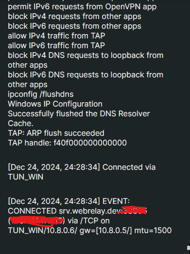
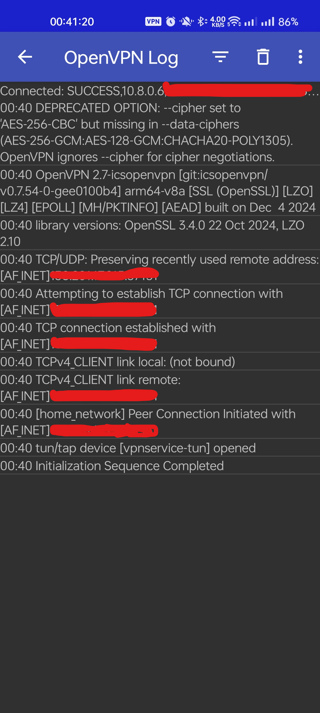

OpenVPN Behind CGNAT
If you're in a situation where you don't have static IP and you can't port forward to WAN.
Requirements
- Router with Portforwarding
- Ngrok Checkout Setup or Web Relay
Using Ngrok
- Install Ngrok
-
Start ngrok on TCP 443
sudo ngrok tcp 443You would get something like number.tcp.region.ngrok.io:random-port-forward-number
ngrok (Ctrl+C to quit) Session Status online Account XXXYYYYYY (Plan: XXXX) Version 3.19.0 Region Country (country_code) Latency 7ms Web Interface http://127.0.0.1:4040 Forwarding tcp://x.tcp.xx.ngrok.io:xxxxx -> localhost:443 Connections ttl opn rt1 rt5 p50 p90Keep this running and take a note tcp://x.tcp.xx.ngrok.io:xxxxx
-
In Free account you get Data Transfer Out of 1GB as of now.
Using WebRelay (Not Available on Windows)
-
Get the webrelay binary.
curl -LO https://dl.webrelay.dev/linux/x64/webrelay && chmod +x webrelay -
Login
webrelay login <your-email-id>An OTP is sent to your mail, Enter that OTP.
? Enter the token you received in your email: xxxxxx Login successful -
Start WebRelay on TCP Port
./webrelay tcp -p 443./webrelay tcp -p 443 Tunnel available at -> srv.webrelay.dev:xxxxx -
Its Free only requires email to sign up
Check/Enable Firewall Settings
-
using
ufwsudo ufw allow 443/tcp sudo ufw enable -
If using
iptablessudo iptables -A INPUT -p tcp --dport 443 -j ACCEPT -
Save the rules
sudo netfilter-persistent save
Install OpenVPN Server on Linux
I'm using Debian 12 & TP-Link Router Archer C6
Install OpenVPN and Easy-RSA
sudo apt update && sudo apt upgrade -y
sudo apt install openvpn easy-rsa -y
Setup the Public Key Infrastructure (PKI)
-
Create the Easy-RSA Directory
make-cadir ~/openvpn-ca cd ~/openvpn-ca -
Configure the PKI Variables, Edit the
varsfile:vi varsModify and Add the Following lines.
set_var EASYRSA_REQ_COUNTRY "YourCountry" set_var EASYRSA_REQ_PROVINCE "YourProvince" set_var EASYRSA_REQ_CITY "YourCity" set_var EASYRSA_REQ_ORG "YourOrg" set_var EASYRSA_REQ_EMAIL "YourEmail@example.com" set_var EASYRSA_REQ_OU "YourOrgUnit" -
Initialize the PKI
./easyrsa init-pkiOutput
abu@ABU-PC:~/openvpn-ca$ ./easyrsa init-pki * Notice: init-pki complete; you may now create a CA or requests. Your newly created PKI dir is: * /home/abu/openvpn-ca/pki -
Build the Certificate Authority (CA)
./easyrsa build-caSet a password and Remember it
abu@ABU-PC:~/openvpn-ca$ ./easyrsa build-ca * Notice: Using Easy-RSA configuration from: /home/abu/openvpn-ca/vars * WARNING: Move your vars file to your PKI folder, where it is safe! * Notice: Using SSL: openssl OpenSSL 3.0.15 3 Sep 2024 (Library: OpenSSL 3.0.15 3 Sep 2024) Enter New CA Key Passphrase: Re-Enter New CA Key Passphrase: Using configuration from /home/abu/openvpn-ca/pki/8273b3c0/temp.058c7933 ..........+..+...+++++++++++++++++++++++++++++++++++++++++++++++++++++++++++++++++*.....+++++++++++++++++++++++++++++++++++++++++++++++++++++++++++++++++*.....................+...+............+..+.......+........+++++++++++++++++++++++++++++++++++++++++++++++++++++++++++++++++ ...+.+++++++++++++++++++++++++++++++++++++++++++++++++++++++++++++++++*..+..+...+.......+...+...+.....+.+........+++++++++++++++++++++++++++++++++++++++++++++++++++++++++++++++++*.........+.....+...+....+.....+.+............+...+...........+...+......+.+......+...+.....+....+..+...+.+...........+..................+..........+..+...+.......+.....+.+++++++++++++++++++++++++++++++++++++++++++++++++++++++++++++++++ Enter PEM pass phrase: Verifying - Enter PEM pass phrase: ----- You are about to be asked to enter information that will be incorporated into your certificate request. What you are about to enter is what is called a Distinguished Name or a DN. There are quite a few fields but you can leave some blank For some fields there will be a default value, If you enter '.', the field will be left blank. ----- Common Name (eg: your user, host, or server name) [Easy-RSA CA]:home_network * Notice: CA creation complete and you may now import and sign cert requests. Your new CA certificate file for publishing is at: /home/abu/openvpn-ca/pki/ca.crt
Generate Server Certificates and Keys
-
Generate a key Pair for the server
./easyrsa gen-req server nopassabu@ABU-PC:~/openvpn-ca$ ./easyrsa gen-req server nopass * Notice: Using Easy-RSA configuration from: /home/abu/openvpn-ca/vars * WARNING: Move your vars file to your PKI folder, where it is safe! * Notice: Using SSL: openssl OpenSSL 3.0.15 3 Sep 2024 (Library: OpenSSL 3.0.15 3 Sep 2024) .....+...+.+.........+........+....+...+...+...+.....+.+...+...+..+.....................+.......+++++++++++++++++++++++++++++++++++++++++++++++++++++++++++++++++*..........+...+++++++++++++++++++++++++++++++++++++++++++++++++++++++++++++++++*........+.....+.+.........+.....+.+..................+...+...+.........+......+...........+...+.+..+.......+...........+....+++++++++++++++++++++++++++++++++++++++++++++++++++++++++++++++++ ..+..+.+.....+...............+......+....+.....+.......+..+.+.........+..+......+...+.+++++++++++++++++++++++++++++++++++++++++++++++++++++++++++++++++*......+......+..+...+....+.....+++++++++++++++++++++++++++++++++++++++++++++++++++++++++++++++++*.+...+..+.+.............................+.+.....+....+..............+.........+.+......+...+...+..+.............+........+.......+..+...+....+.....+.+...+..+.......+.....+.+..+.........+...+......+...............+.......+..+.+......+......+..+.......+...+..+...+......+......+......+............+...+....+........+.+..+....+...+.....+++++++++++++++++++++++++++++++++++++++++++++++++++++++++++++++++ ----- You are about to be asked to enter information that will be incorporated into your certificate request. What you are about to enter is what is called a Distinguished Name or a DN. There are quite a few fields but you can leave some blank For some fields there will be a default value, If you enter '.', the field will be left blank. ----- Common Name (eg: your user, host, or server name) [server]:home_network * Notice: Keypair and certificate request completed. Your files are: req: /home/abu/openvpn-ca/pki/reqs/server.req key: /home/abu/openvpn-ca/pki/private/server.key -
Sign the server Certificate
./easyrsa sign-req server serverabu@ABU-PC:~/openvpn-ca$ ./easyrsa sign-req server server * Notice: Using Easy-RSA configuration from: /home/abu/openvpn-ca/vars * WARNING: Move your vars file to your PKI folder, where it is safe! * Notice: Using SSL: openssl OpenSSL 3.0.15 3 Sep 2024 (Library: OpenSSL 3.0.15 3 Sep 2024) You are about to sign the following certificate. Please check over the details shown below for accuracy. Note that this request has not been cryptographically verified. Please be sure it came from a trusted source or that you have verified the request checksum with the sender. Request subject, to be signed as a server certificate for 825 days: subject= commonName = home_network Type the word 'yes' to continue, or any other input to abort. Confirm request details: yes Using configuration from /home/abu/openvpn-ca/pki/ea6e6305/temp.e2dbb5e4 Enter pass phrase for /home/abu/openvpn-ca/pki/private/ca.key: Check that the request matches the signature Signature ok The Subject's Distinguished Name is as follows commonName :ASN.1 12:'home_network' Certificate is to be certified until Mar 28 18:35:29 2027 GMT (825 days) Write out database with 1 new entries Database updated * Notice: Certificate created at: /home/abu/openvpn-ca/pki/issued/server.crt -
Generate Diffie-Hellman Parameters
./easyrsa gen-dhabu@ABU-PC:~/openvpn-ca$ ./easyrsa gen-dh * Notice: Using Easy-RSA configuration from: /home/abu/openvpn-ca/vars * WARNING: Move your vars file to your PKI folder, where it is safe! * Notice: Using SSL: openssl OpenSSL 3.0.15 3 Sep 2024 (Library: OpenSSL 3.0.15 3 Sep 2024) Generating DH parameters, 2048 bit long safe prime .......................+........... ...
Generate Client Certificates
-
Create a Key Pair for the Client
./easyrsa gen-req client1 nopass* Notice: Using Easy-RSA configuration from: /home/abu/openvpn-ca/vars * WARNING: Move your vars file to your PKI folder, where it is safe! * Notice: Using SSL: openssl OpenSSL 3.0.15 3 Sep 2024 (Library: OpenSSL 3.0.15 3 Sep 2024) ...........+.+......+...+...........+.+..............+......+...+++++++++++++++++++++++++++++++++++++++++++++++++++++++++++++++++*.......+..+...+......+.............+......+..+++++++++++++++++++++++++++++++++++++++++++++++++++++++++++++++++*....+.........+............+.............+..+.+..+......+.+.....+.+...+..+.......+..+..................+..........+......+.........+...+++++++++++++++++++++++++++++++++++++++++++++++++++++++++++++++++ ....+...............+........+...+....+...+............+...+..+.+.....+.+.....+++++++++++++++++++++++++++++++++++++++++++++++++++++++++++++++++*...+.........+............+......+...+.+...+...+..+.+..+...+.......+.........+.....+....+......+...............+...+..+......+.......+..+...+...+....+..............................+...+......+...........+.+..+.+.....+....+...+.....+.......+..+.+...+.....+.......+..+.......+...+..+................+...+...........+.+..+......+.........+.............+.....+...+++++++++++++++++++++++++++++++++++++++++++++++++++++++++++++++++*.....+.....+....+...+++++++++++++++++++++++++++++++++++++++++++++++++++++++++++++++++ ----- You are about to be asked to enter information that will be incorporated into your certificate request. What you are about to enter is what is called a Distinguished Name or a DN. There are quite a few fields but you can leave some blank For some fields there will be a default value, If you enter '.', the field will be left blank. ----- Common Name (eg: your user, host, or server name) [client1]: * Notice: Keypair and certificate request completed. Your files are: req: /home/abu/openvpn-ca/pki/reqs/client1.req key: /home/abu/openvpn-ca/pki/private/client1.key -
Sign the client certificate
./easyrsa sign-req client client1abu@ABU-PC:~/openvpn-ca$ ./easyrsa sign-req client client1 * Notice: Using Easy-RSA configuration from: /home/abu/openvpn-ca/vars * WARNING: Move your vars file to your PKI folder, where it is safe! * Notice: Using SSL: openssl OpenSSL 3.0.15 3 Sep 2024 (Library: OpenSSL 3.0.15 3 Sep 2024) You are about to sign the following certificate. Please check over the details shown below for accuracy. Note that this request has not been cryptographically verified. Please be sure it came from a trusted source or that you have verified the request checksum with the sender. Request subject, to be signed as a client certificate for 825 days: subject= commonName = client1 Type the word 'yes' to continue, or any other input to abort. Confirm request details: yes Using configuration from /home/abu/openvpn-ca/pki/af0b8b00/temp.f3b90bfb Enter pass phrase for /home/abu/openvpn-ca/pki/private/ca.key: Check that the request matches the signature Signature ok The Subject's Distinguished Name is as follows commonName :ASN.1 12:'client1' Certificate is to be certified until Mar 28 18:38:01 2027 GMT (825 days) Write out database with 1 new entries Database updated * Notice: Certificate created at: /home/abu/openvpn-ca/pki/issued/client1.crt
Configure the OpenVPN Server
-
Copy the required files to
/etc/openvpn:sudo cp ~/openvpn-ca/pki/ca.crt /etc/openvpn/ sudo cp ~/openvpn-ca/pki/private/server.key /etc/openvpn/ sudo cp ~/openvpn-ca/pki/issued/server.crt /etc/openvpn/ sudo cp ~/openvpn-ca/pki/dh.pem /etc/openvpn/ -
Create the OpenVPN Server Configuration file
sudo vi /etc/openvpn/server.confAdd the following content to it.
port 443 proto tcp dev tun ca ca.crt cert server.crt key server.key dh dh.pem server 10.8.0.0 255.255.255.0 ifconfig-pool-persist ipp.txt push "redirect-gateway def1 bypass-dhcp" push "dhcp-option DNS 8.8.8.8" push "dhcp-option DNS 8.8.4.4" keepalive 10 120 cipher AES-256-CBC user nobody group nogroup persist-key persist-tun status openvpn-status.log verb 3
Enable IP Forwarding
-
Edit the sysctl configuration.
sudo vi /etc/sysctl.confCheck if the following line is Present and uncommented or add it.
net.ipv4.ip_forward=1 -
Apply the changes.
sudo sysctl -pabu@ABU-PC:~/openvpn-ca$ sudo sysctl -p net.ipv4.ip_forward = 1
Configure Firewall
-
Install iptables-persistent
sudo apt install iptables-persistent -y -
Configure NAT rules.
sudo iptables -t nat -A POSTROUTING -s 10.8.0.0/24 -o eth0 -j MASQUERADE -
Save the rules
sudo sh -c "iptables-save > /etc/iptables/rules.v4"
Start and Enable OpenVPN
-
Start OpenVPN
sudo systemctl start openvpn@server -
Enable OpenVPN to start on boot.
sudo systemctl enable openvpn@serverabu@ABU-PC:~/openvpn-ca$ sudo systemctl enable openvpn@server Created symlink /etc/systemd/system/multi-user.target.wants/openvpn@server.service → /lib/systemd/system/openvpn@.service.
Configure the Client
-
Create a client configuration file
sudo vi client1.ovpn -
Add the following Content, Replace
your-ddns-nameclient dev tun proto tcp remote `your-dns-name` `your-dns-port` resolv-retry infinite nobind persist-key persist-tun remote-cert-tls server cipher AES-256-CBC verb 3 <ca> # Paste the content of ca.crt here, Check /home/$USER/openvpn-ca/pki/ca.crt </ca> <cert> # Paste the content of client1.crt here, Check /home/$USER/openvpn-ca/pki/issued/client1.crt </cert> <key> # Paste the content of client1.key here, Check /home/$USER/openvpn-ca/pki/private/client1.key </key>
Test the VPN
-
Copy the Phone to PC you want to connect it to.
-
On Windows/Linux PC you can use OpenVPN Client
Sucessfully Connected on Windows

-
On Android OpenVPN Client or OpenVPN for Android (I prefer this one)
Successfully Connected on Android

Sources
- Tunneling OpenVPN sever over CGNAT
- Guide To Setup UP OpenVPN
- Webrelay QuickStart Guide